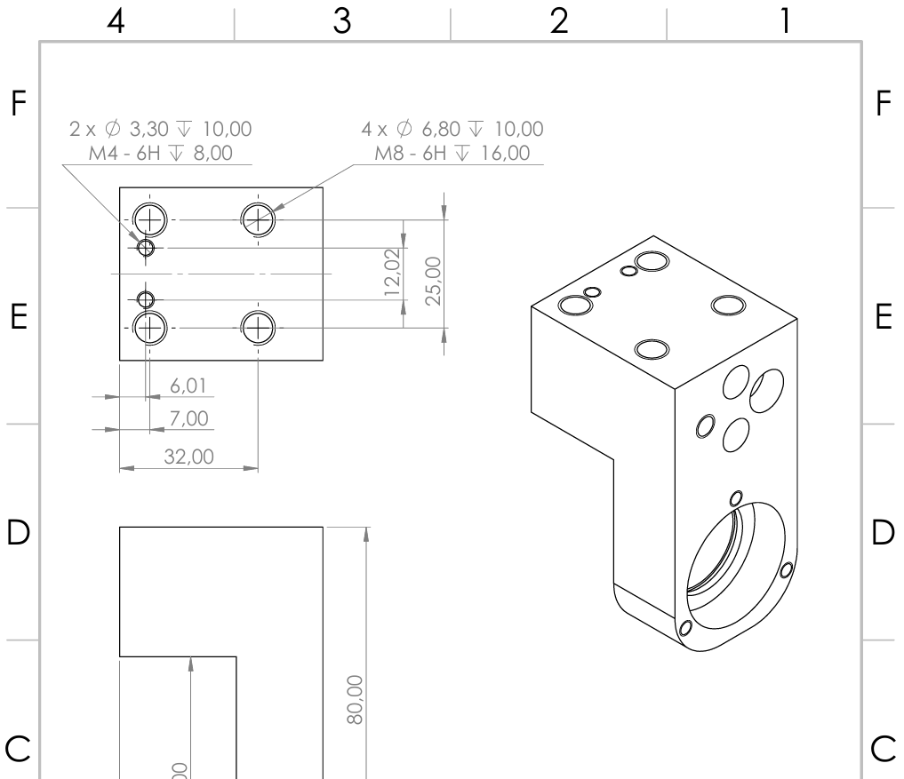
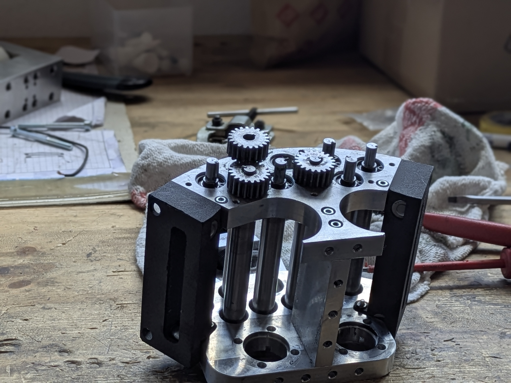
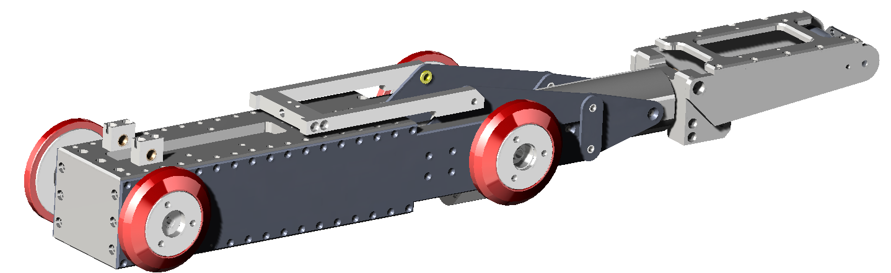
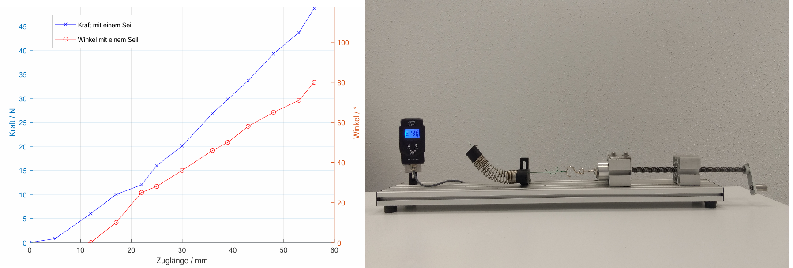

Work Projekte
Contract Work Auftragsarbeit
.png)



Bendable Pipe Inspection Camera Biegsame Rohrinspektion Kamera

.jpg)
.jpeg)
Pipe Inspection · Robotics · Mechanical Engineering
Replacement Parts · Product Adaptation · R&D Support Ersatzteile · Produktanpassung · F&E Unterstützung
About Über mich
I'm a freelance engineer working with inspection and refurbishment equipment companies — from re-engineering a discontinued part to supporting a full development project. Ich bin freiberuflicher Ingenieur und arbeite mit Unternehmen aus der Inspektion und Rohrsanierung — vom Re-Engineering eines abgekündigten Bauteils bis zur Unterstützung eines vollständigen Entwicklungsprojekts.
My background is in robotic systems and mechanical product development. I've spent the last few years building things in the pipe and inspection space — which means I understand the constraints: tight tolerances, hostile environments, and equipment that has to work when it's inside a pipe.
I work directly with the people who need the part or the solution — no middlemen, no agency layer.
Mein Hintergrund liegt in robotischen Systemen und mechanischer Produktentwicklung. Die letzten Jahre habe ich damit verbracht, Lösungen im Bereich Rohr- und Inspektionstechnik zu entwickeln — ich kenne die Anforderungen: enge Toleranzen, raue Umgebungen und Geräte, die funktionieren müssen, wenn sie im Rohr stecken.
Ich arbeite direkt mit den Menschen, die das Bauteil oder die Lösung brauchen — ohne Zwischenhändler.
What I do Leistungen
Discontinued components, hard-to-source parts, or anything that needs to be redesigned to fit an existing system. I reverse-engineer, redesign, and deliver production-ready documentation. Abgekündigte Bauteile, schwer beschaffbare Teile oder alles, was neu konstruiert werden muss, um in ein bestehendes System zu passen. Ich reverse-engineere, konstruiere neu und liefere fertigungsgerechte Dokumentation.
Adapting existing equipment to special pipe sizes, regional standards, or customer-specific requirements. If your product needs to work somewhere it wasn't originally designed for, that's where I come in. Anpassung bestehender Geräte an besondere Rohrdurchmesser, regionale Normen oder kundenspezifische Anforderungen. Wenn dein Produkt dort funktionieren soll, wo es ursprünglich nicht vorgesehen war, bin ich der richtige Ansprechpartner.
For projects that go beyond a single part — concept development, prototyping, testing, and technical documentation. I can take on a defined scope or plug into an existing team. Für Projekte, die über ein einzelnes Bauteil hinausgehen — Konzeptentwicklung, Prototyping, Testing und technische Dokumentation. Ich übernehme einen definierten Umfang oder integriere mich in ein bestehendes Team.
Precise 3D models, manufacturing drawings, and patent-supporting documentation. Useful as a standalone service or as part of a larger project. Präzise 3D-Modelle, Fertigungszeichnungen und patentunterstützende Dokumentation. Als eigenständige Leistung oder als Teil eines größeren Projekts.
Work Projekte
Contract Work Auftragsarbeit



Bendable Pipe Inspection Camera Biegsame Rohrinspektion Kamera

Further projects & references available on request Weitere Projekte & Referenzen auf Anfrage